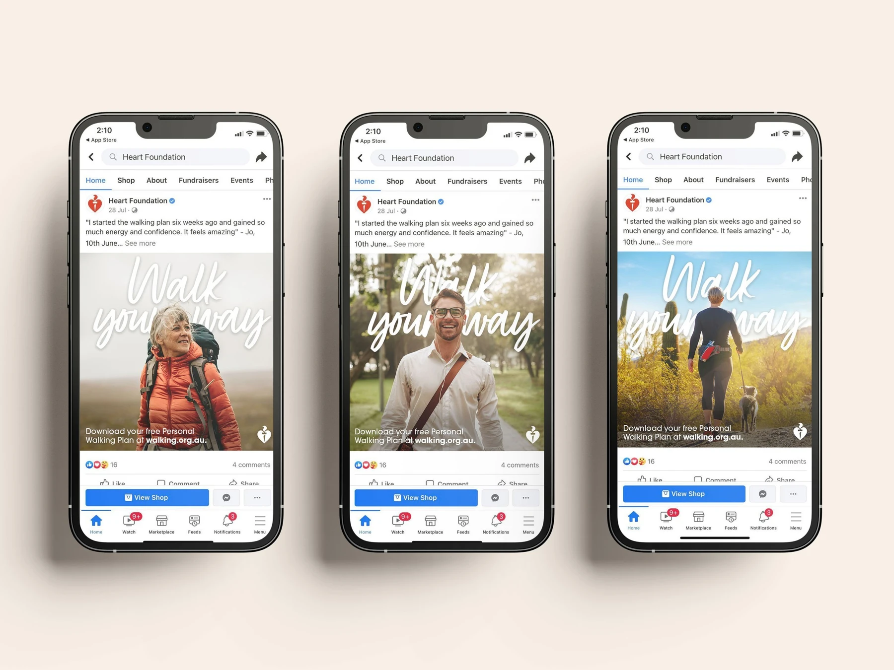

Heart Foundation AustraliaStrategy, creative, analysis & stakeholder leadership

Make the first step feel easy.
The Heart Foundation’s six-week Personalised Walking Plan gave people a practical place to start. The campaign showed walking alone, with friends and outdoors, making the idea feel achievable in everyday life.
I led strategy, creative, analysis and stakeholder management. Earlier campaign learning informed an always-on Facebook approach, focusing acquisition investment in one channel. The 2022 campaign delivered 27,675 plan downloads at $2.34 each, against a $9 acquisition KPI.
Results
$2.34
Cost per download against a $9 KPI
27,675
Walking plan downloads
+61%
Above the download target
Next project
Money Your Way.